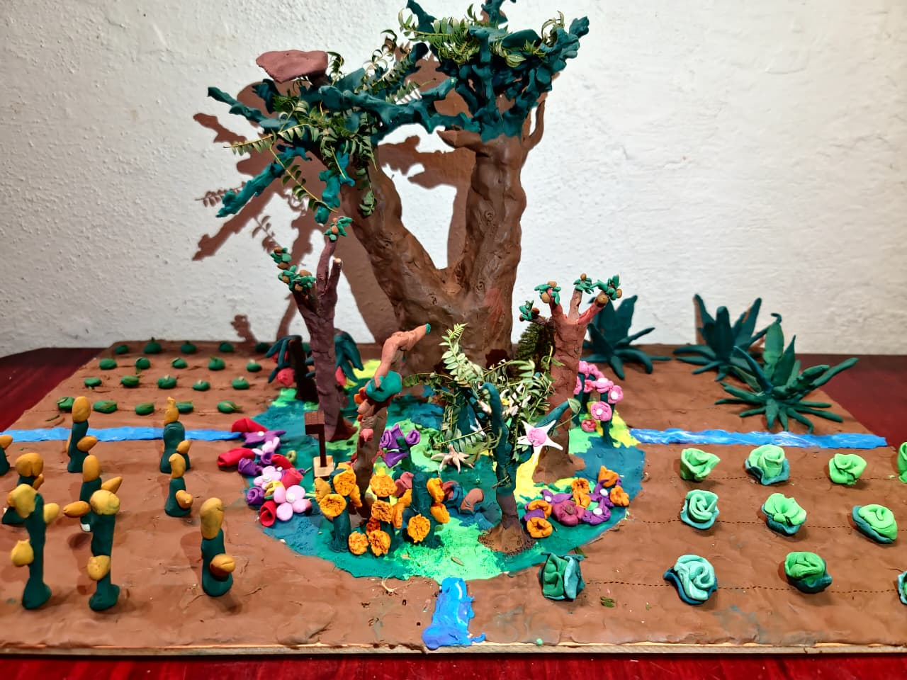

AÑI ITA
Inteligencia Agrícola Regenerativa
Añi Ita (Alma de Flor) es el plan maestro para crear una red de Infraestructura Ecológica Activa. Transformamos la agricultura industrial en sistemas vivos mediante ciencia de datos y conocimiento ancestral.
Usa la barra de navegación a la izquierda para explorar las herramientas. Cada módulo está diseñado para construir un futuro regenerativo.
Prototipo: Sistema Autosustentable Cero Desperdicio

Modelo conceptual del sistema vivo y circular.
Economía Circular en la Finca
Este modelo físico demuestra cómo la Isla Polinizadora no genera basura, sino riqueza para el agricultor:
- Biomasa a Energía: Los residuos de la cosecha se procesan en un biodigestor integrado.
- Doble Beneficio: Se produce biogás para uso doméstico y biol (fertilizante) para el suelo.
- Sistema Vivo: A diferencia de los insumos químicos, este sistema se regenera año con año.
Módulos de la Plataforma
Mapa de Flora y Polinizadores
Mapa interactivo para identificar flora endémica y rutas de polinizadores clave en Oaxaca y México.
Islas Polinizadoras
Diseño de arquetipos 3D de hábitats que funcionan como infraestructura ecológica permanente dentro de los cultivos.
Modo Abeja
Experiencia inmersiva que permite visualizar el campo desde la perspectiva de los polinizadores.
Modelo Predictivo IA
Algoritmos de aprendizaje automático que usan datos climáticos para predecir el éxito de la reforestación.
Beneficios Clave
- Mayor Productividad: Aumenta el rendimiento de cultivos dependientes de polinización (café, aguacate).
- Independencia de Insumos: Reduce costos al generar fertilizantes propios y control natural de plagas.
- Soberanía Alimentaria: Fomenta el uso de semillas nativas adaptadas a la región.
- Resiliencia Climática: Ecosistemas diversos que resisten mejor las sequías.